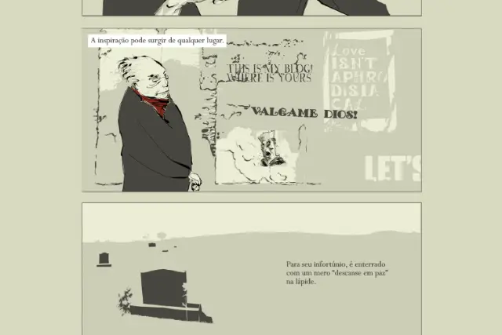

Outros Quadrinhos

HQs alternativas de várias partes do mundo, exclusivas da internet, podem ser encontradas no site: http://outrosquadrinhos.com.br/. O site publica novas HQs de segunda a sábado com acesso gratuito. Um projeto com iniciativa de Fabiano Denardin (editor e tradutor), Érico Assis (tradutor), Rodolfo Muraguchi (letrista) e Giovani Faganello (designer e desenvolvedor), a equipe fez um acerto com quadrinistas dos EUA, Austrália, Chile e Canadá para traduzir e publicar suas webcomics.
Agora uma “palinha” do que pode ser encontrado no site:
HQ I
HQ II